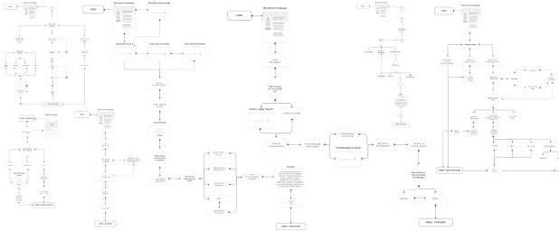

overview
Roles:
UX/UI Research & Design, Branding, Copy
Tools:
Sketch, Invision Studio & App, Figma
Time:
8 weeks
Deliverables:
Competitive Analysis, User Surveys, Personas, User Stories & Flows, Content Strategy, Copy, Wireframes, Prototyping, Preference Testing, Branding, UI
The problem
Business owners are struggling every day to manage an overwhelming amount of tasks and information. From customer care and supplier relations to receiving merchandise and overseeing quality control, there’s always something that needs their immediate attention.
The product
OCTA was designed to meet the unique needs of these business owners. It was originally conceived as a Cloud app for small business owners to store & share information with their suppliers. After conducting vigorous user research, that changed to reflect our target users needs and pain points. OCTA evolved a couple steps further into an app that helps a busy business owner run their business better. All tailored to their unique workflow. As told by them.

my design process
The competition
Google Drive, Camcard, and Neat are all cloud applications that business owners use to organize different aspects of their business. Google Drive is an “all-in-one”, Camcard stores business contacts and posts news and updates, and Neat helps organize documents for accounting and tax time. I look never look to compete directly with any of the competitors. I look to create our own unique value by learning what these companies are doing right and what’s missing from their products for my audience.
User surveys
I interviewed a total of 20 potential users for OCTA. There were 12 retailers and eight wholesalers. 40% of survey particiants were between the age of 35-44. 33.3% were between the ages of 45-54, the remaining 26.7% were between the ages of 55-64. I asked them questions to learn about the tools they were currently using, what they felt was missing from these products, and what they liked best about them. I was able to add some more products to my list for a further competitive analysis, like Dropbox, Pinterest, iCloud, and Instagram. I asked them how much they’re paying for these products. I also wanted to understand how they prefer to be contacted for business purposes, so I could later design the best communication experience between retailer and supplier/wholesaler. The last aspect I focused on learning from my survey participants is how they usually order products. This helped me envision a way to improve transparency during creating a purchase order, and cut on shipping mistakes before they happen.
User personas
I created these user personas based on interviews with nine retailers and five wholesalers.

Jen
Retail | Age 44 | NJ
Jen is a retailer and serial entrepenuer. She is excessively organized and cares a lot about making her customers happy.

Kew
Wholesale | Age 52 | NY
Kew is a veteran wholesaler. He sells to independent retailers like Jen and small department stores.
Both Jen and Kew think they’re a LOT more technologically saavy than they really are. That solidified the need for OCTA to be very intuitive. I also planned for OCTA’s microcopy to provide a lot of positive reinforcement. Busy business owners using the app will feel that they are getting things done.
User stories
Items of high importance
AS A RETAILER
- I want to be able to report damages directly to my seller
- I want to report shipping mistakes by referring to the invoice
- I want to generate invoices directly on site with images
- I want to record all business conversations for accountability
- I want to message multiple sellers at once to source an item
- I want to collaborate w/my supplier and share items to source
- I want to check sales history per SKU while ordering
AS A WHOLESALER
- I want to learn how to source better products for my retailers
- I want to organize my business so I can focus on growing it
- I want to find more customers to sell my offerings to
User flows
ONBOARDING
I cancelled OCTA’s onboarding altogether after showing it to a senior design mentor. As intuitive as I created it, she taught me that the most intuitive onboarding is no onboarding at all.
SAVING AN ITEM
Research showed me what tools potential users are currently using for their business. I designed the original “Saving an Item” flow to pull data from Quickbooks, Google Drive, Excel, or Dropbox.
REPORTING A DAMAGE / SHIPPING MISTAKE
By searching for the invoice number and choosing a “reason for return” or “type of damage”, a user can report a shipping mistake of damage. I chose not to offer an open text field, which could be a platform for negative and emotional text that could potentially harm a business relationship.
GENERATING AN INVOICE ON SITE
Some companies reported having a number/letter system for their invoices. Some didn’t at all, and the process of creating one was distracting. Therefore, I designed an option to add a custom invoice number or generate a new one while creating an invoice.
MESSAGING / COMMUNICATION
The original user flow for messaging included the abiity to send voice messages, but that was dropped during the HIFI design. Voice messages would be both expensive for the app to store and counter-productive. Our users had reported “not being able to find or remember” where they communicated with each seller. Listening to multiple voice messages wouldn’t make that any easier.
Content Strategy

Positive images, copy and hierarchy were designed to help motivate a business owner to run their business more efficiently and build their own feelings of integrity. We plan to build our user’s trust by not over-promising anything, and by using a friendly yet responsible tone throughout all the content.
Wireframes
OCTA was originally designed for iOS. While designing, I repeatedly referenced the Human Interface Guidelines and designed the screens to be equally accessible for both left and right handed users.
I asked the developer to be included in the wireframe testing, so I can get his insight and ideas on the design.


DASHBOARD / TAB BAR
- Notifications of return requests, payment reminders for invoices, new messages and replies
- After testing - Invoice link directly from tab bar
- Access business-specific information directly on business contact page

INVOICING
- Testing showed the need to clarify where an invoice is in it’s lifecycle. (Purchase order, Backorder, Packing list)
- Show outstanding amount in total and per invoice
- After testing - added shipping cell to clarify who pays & amount